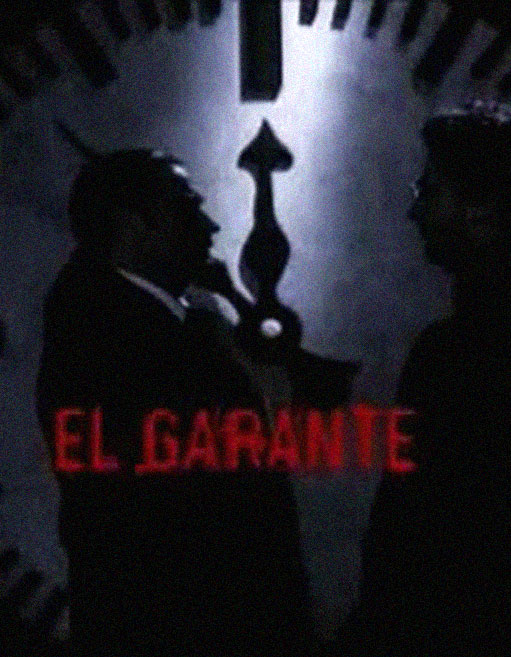

El garante es una miniserie de televisión argentina de terror de 1997 creada y dirigida por el director Sebastián Borensztein.
Protagonizada por Lito Cruz, Leonardo Sbaraglia, Eleonora Wexler y David Masajnik. Fue transmitida por Canal 9 Libertad.